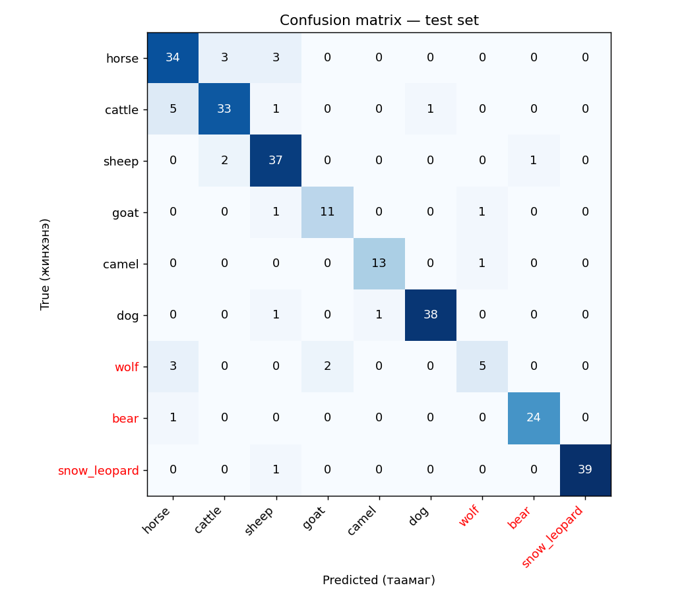

Малчны хамгаалагч
Шууд турших
Камер асаагаад амьтны зургийг шар хайрцагт харуулна уу, эсвэл зураг сонгоно уу. Тооцоо браузер дотор хийгдэнэ.
Шийдвэр
P(аюул) = pчоно + pбаавгай + pирвэс
Бүртгэл
Энэ хуудсанд илэрсэн амьтад (live.py-ийн Excel log-той ижил)
| Цаг | Амьтан | p | P(аюул) | Бүс |
|---|---|---|---|---|
| Одоогоор алга | ||||
Confusion matrix
Мөр = жинхэнэ анги, багана = таамаг

Асуудал ба шийдэл
Малчид чоно, ирвэсний дайралтаас болж мал алддаг. Систем камераар 9 анги амьтан таниж, махчин байх магадлал босгоос давбал дохио өгч, бүх илрүүлэлтийг Excel-д бүртгэнэ.
| Аюулгүй | Адуу, Үхэр, Хонь, Ямаа, Тэмээ, Нохой |
| Аюултай | Чоно, Баавгай, Ирвэс |
Систем хэрхэн ажилладаг
Камер → шар хайрцаг → CNN (MobileNetV3-Small)
→ x (D = 576 тоо) → Logistic Regression
→ p (9 магадлал) → P(аюул) ≥ T ? → дохио
- CNN: ImageNet дээр сурсан, жин өөрчлөгдөхгүй (transfer learning)
- LR: бидний сургадаг хэсэг, W (9 × D), b (9)
- Вэб: CNN → ONNX, W, b → JSON; браузер ижил томьёогоор бодно
Томьёо
z_k = w_k · x + b_k (k = 1..9) p_k = e^(z_k) / Σ_j e^(z_j) (softmax) P(аюул) = p_чоно + p_баавгай + p_ирвэс ≥ T → ДОХИО
Жишээ: z(чоно) = 2, z(нохой) = 1, бусад = 0 → Σez = 17.107 → p(чоно) = 0.432 → P(аюул) = 0.549 ≥ 0.3 → ДОХИО
Өгөгдөл
| Аюулгүй | Адуу, Үхэр, Хонь, Ямаа, Тэмээ, Нохой |
| Аюултай | Чоно, Баавгай, Ирвэс |
| Хуваалт | 80% сургалт (train), 20% шалгалт (test) |
| Нэмэлт | Тольдсон (flip) зураг зөвхөн сургалтад |
Эх сурвалж: Kaggle Animals-10, 15 Animal, Cats in the Wild
Дүгнэлт
Загвар test хэсэгт 9 ангийг 89.3% зөв ангилж, аюулгүй/аюултай бүсийг 96.9% зөв ялгалаа. Махчдын 90.7%-д дохио өгсөн бол малын ердөө 0.5%-ийг махчин гэж андуурсан. Алдсан махчдад ирвэсийг хонь, чоныг адуу гэж таамагласан тохиолдол байсан. Эдгээр ангид зураг цөөн, өнгө, орчин нь төстэй байсан нь шалтгаан байж болох юм. Recall 95%-ийн зорилтод хүрээгүй тул махчдын зургийг нэмэх нь дараагийн алхам. Бэлэн CNN-ийн embedding дээр энгийн Logistic Regression сургахад өндөр нарийвчлал гардгийг, мөн алдааны өртөг тэнцүү бус үед accuracy-аас гадна recall-ийг хэмжих шаардлагатайг ойлголоо.
Recall-ийг accuracy-аас чухалд тавьсан: чоныг "хонь" гэж алдах нь эсрэгээсээ хамаагүй аюултай.
Хязгаарлалт ба цаашдын ажил
- Нэг кадрт нэг амьтан (detection байхгүй)
- Шөнийн зураг сургалтад байхгүй
- Браузер зургийг Python-оос арай өөрөөр багасгадаг тул магадлал бага зэрэг зөрж болно
- Махчдын (ялангуяа ирвэс, чоно) зургийг нэмж recall-ийг 95%-д хүргэх